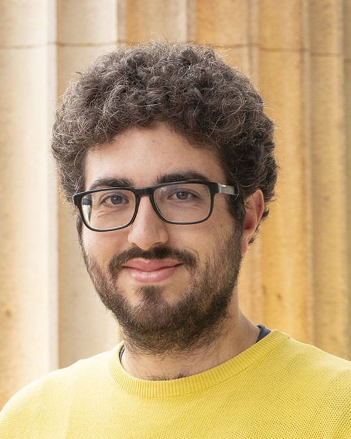

|
I am a mathematician, currently doing a postdoc at the University of Passau in the Discrete Mathematics group led by Stefan Glock. My research is funded by the Alexander von Humboldt Foundation. Previously I have held a postdoctoral position with Shoham Letzter at University College London and I have completed my PhD under the supervision of Julia Böttcher and Jozef Skokan at the London School of Economics. Before that I have studied mathematics at the University of Padova. I am interested in various problems related to extremal and probabilistic combinatorics, but I do enjoy working in the intersection of different areas of mathematics as well. Feel free to reach me if you want to work on a problem together! |
 |
Contact details
amedeo [dot] sgueglia [at] uni-passau [dot] de
Office HK30.118
Dr.-Hans-Kapfinger-Straße 30
94032 Passau
Germany